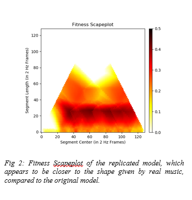
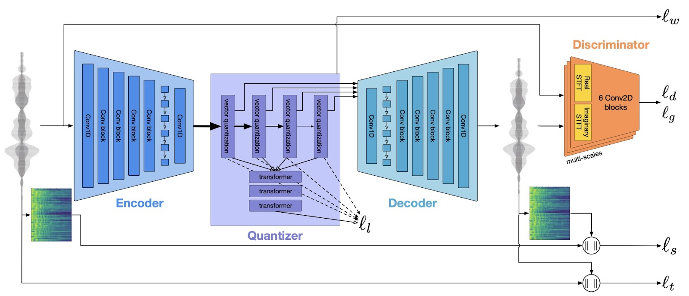

Quantitative Comparison
| Metric | Recreated Landscape | Original Landscape |
|---|---|---|
| Pearson Correlation | 0.85 | 1.00 |
| Spearman Correlation | 0.82 | 1.00 |
| R² Score | 0.72 | 1.00 |
| RMSE | 0.25 | 0.00 |
Table 1: Comparison of metrics between the recreated fitness landscape and the original experimental landscape.
Fitness Landscape Visualization
Recreated Fitness Landscape

Figure 2: Visualization of the recreated protein fitness landscape.
Original Fitness Landscape

Figure 3: Visualization of the original experimental protein fitness landscape.
Model Architecture
RVQ Encoder

Figure 4a: Diagram of the RVQ encoder component of the model.
Overall Model

Figure 4b: Diagram of the overall ReLIR model architecture.